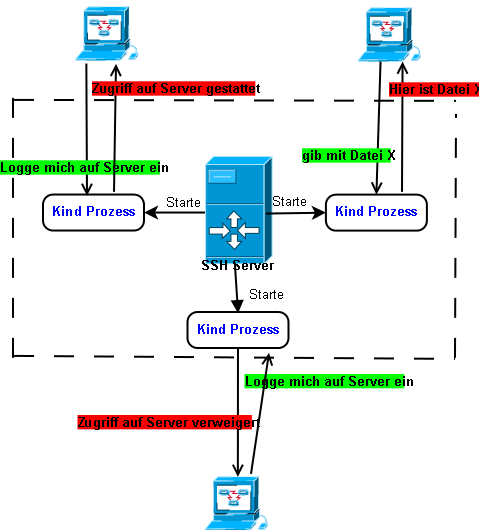

Created Dienstag 27 September 2011
- Netzwerkprotokoll der TCP/IP Protokoll Familie
- SSH nutzt die klassische Client Server Architektur
- Datenübertragung mit sicherer Verschlüsselung und Authentifizierung
- interkative Anmeldevorgänge
- gesicherte Weiterleitung an andere Protokolle (sog. Tunneling)
- ersetzt die unsicheren Protokolle Telnet, RLOGIN und RSH
- openssh bietet Schutz gegen diese Angriffe aus dem Netz:
- DNS Spoofing
- IP Spoofing
- IP Source Routing
- Ausspähen von Klartextwörtern und übertragenen Nutzerdaten
- Manipulation von Daten
- Angriffe auf den X-Server durch vorgetäuschte Verbindungen zum X11-Server
- bietete Sicherheit durch Authentifizierung und Integrität der übermittelten Datenströme
- kann intigiriert in Authentifizierungssystememn wie PAM, Kerberos,PGP etc. (missing links PAM,Kerberos,PGP)
- Schlüssel basierte Authentifizierung, keine Passwörter
Achtung: Protokollversion 1 sollte nicht mehr eingesetzt werden, da sie mehrere Sicherheitslücken aufweist.
